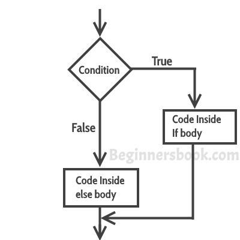
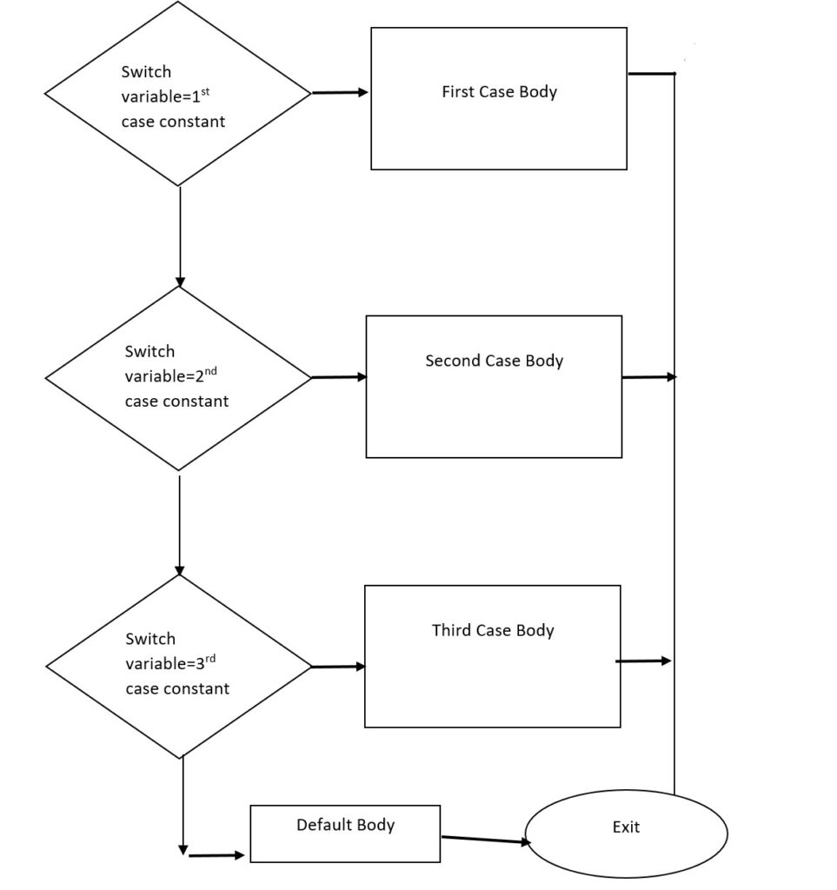

if-condition
It is one of the powerful conditional statement. If statement is responsible for modifying the flow of execution of a program.
If statement is always used with a condition.The condition is evaluated first before executing any statement inside the body of If.
The syntax for if statement is as follows:
if(condition) {
(body of the condition code)
}

If-else statement
If the condition is true,the code inside the if block will be executed .If it is false then code inside the else block will be executed .
if (condition ) {
(body of if block condition code )
}
else{
(body of the else block code )
}

If-else-if statement
if (condition1) {
block of code to be executed if condition1 is true
} else if (condition2) {
block of code to be executed if the condition1 is false and condition2 is true
} else {
block of code to be executed if the condition1 is false and condition2 is false
}

Switch Statement
switch(condition/expression) {
case1 "true" :
return (block code )
break;
case2 "true" :
return (block code )
break;
case3 "true" :
return (block code )
break;
default :
return (initial state)
}
